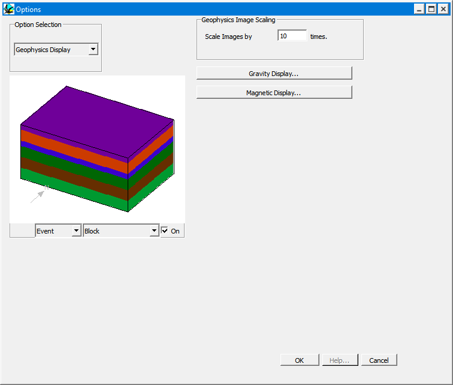

Geophysics display options
These windows allow the user to alter the default display mode for geophysics images, or alter them once an image has been displayed.

| GROUP | NAME | FUNCTION |
|---|---|---|
| Geophysics Image Scaling | Sets scaling for bilinear interpolation of calculated data prior to display | |
| Gravity Display | Opens up window with defaults for gravity image displays | |
| Magnetics Display | Opens up window with defaults for magnetics image displays |

Once a Geophysics Display is presented by moving the cursor into the window and clicking right, the following display
configuration dialog is presented. Note that this dialog provides the ability to control colour imagery and contour presentations.
Noddy · open source under the MIT licence · Loop3D/noddy_qt